Real product screens pulled from Mobbin (web), source-isolated so its quality can be judged on its own and compared against the web report. Screenshots are embedded inline — each links back to its Mobbin page. Lens: where connection lives · where config lives · OAuth return · edit vs setup · empty→connected.
Two homes: a grid of provider cards (logo + value prop + Connect) or a dense one-line list when there are many providers. For Airtable-only V1 a single focused card is right; the grid is the future container, not something to over-build now.
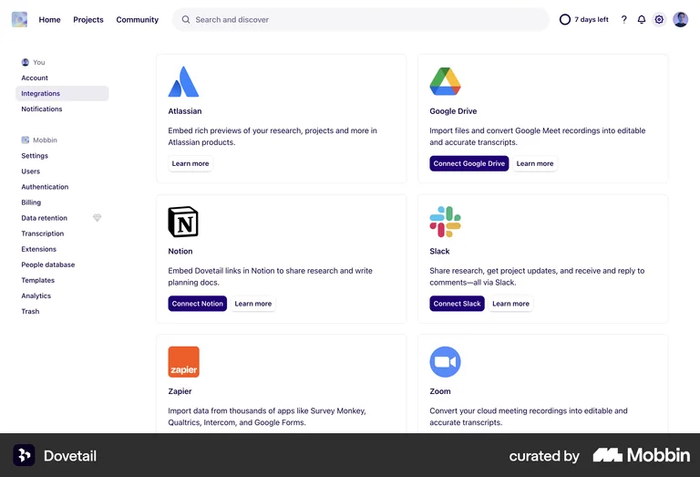
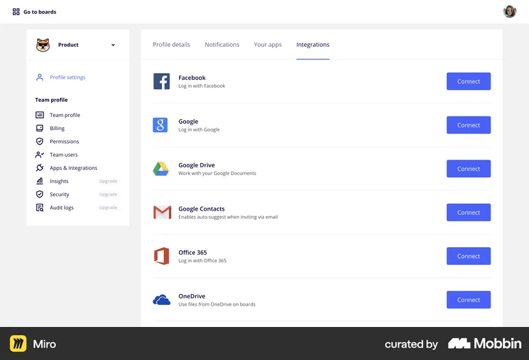
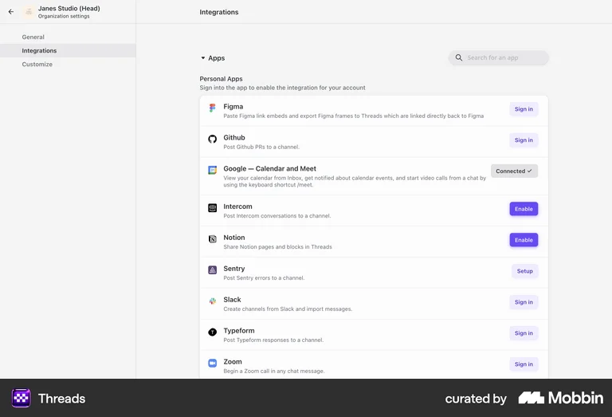
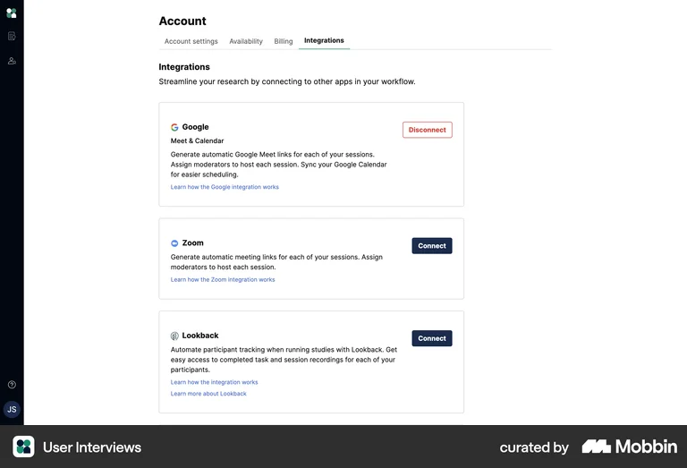
Mobbin splits cleanly by config weight: light connect → small modal / inline; heavy config → a dedicated page or large side-panel with a validate-then-commit step, never a cramped modal. The two below are the closest analogs to Baseout.
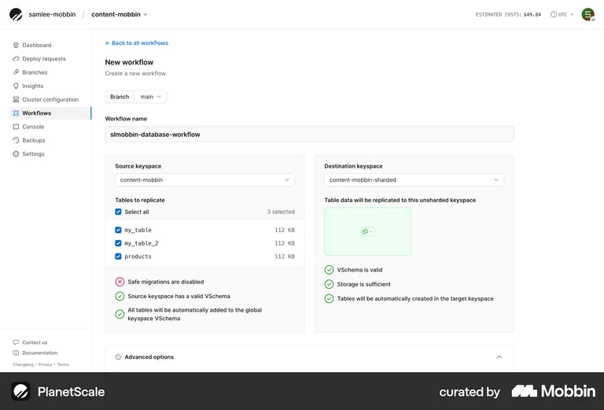
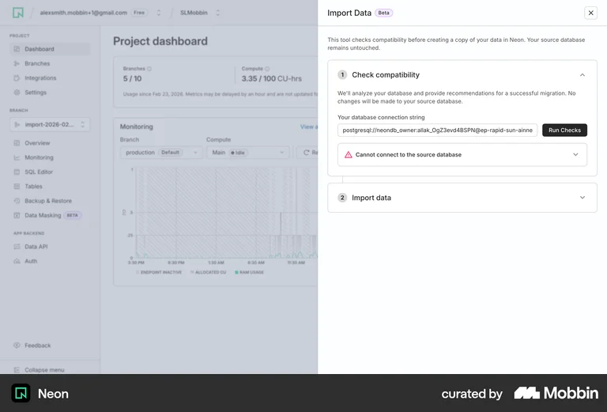
Verdict: the evidence backs our call — heavy config belongs on a page/panel with a validate step, not a modal. Modals only appear for the light connect step.
A dedicated confirmation, never a silent redirect — matching our spec’s “Connection succeeds → confirm + report N bases found.” Note Base44 also labels each connector “Read only”, exactly our read-only-access promise.
Managing an already-connected integration is a dedicated detail page with all sections in place — change in place, no wizard re-run. Linear is best-in-class and is exactly the pattern we proposed.
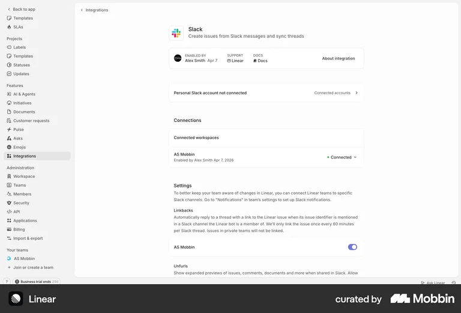
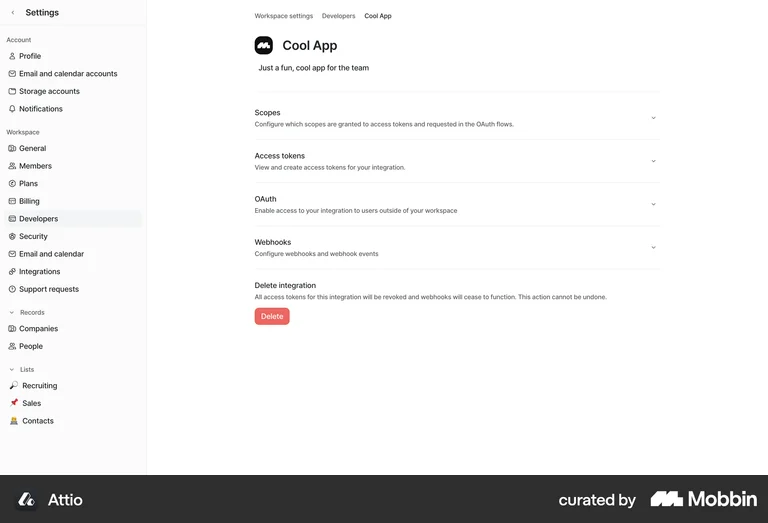
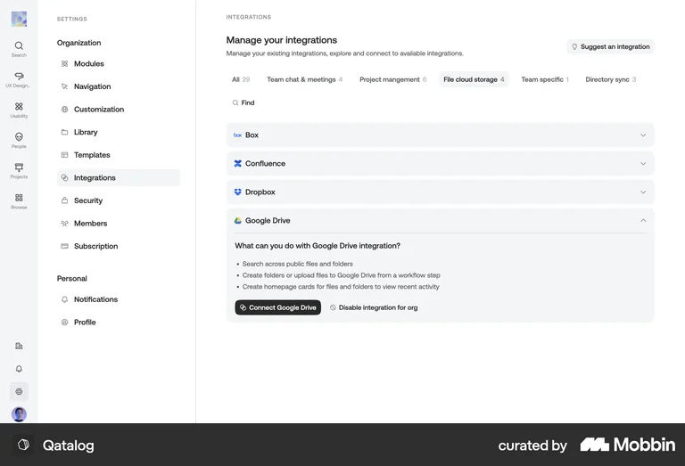
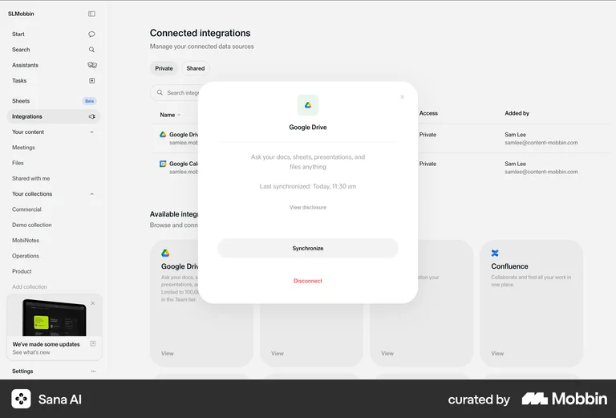
The card mutates in place once connected — the empty “Connect” card becomes a “Connected” card carrying status, with a ⚙ / … into the detail page.
Without prompting, Mobbin surfaced evidence for nearly every delta we’d specced — a strong signal our spec isn’t invented.
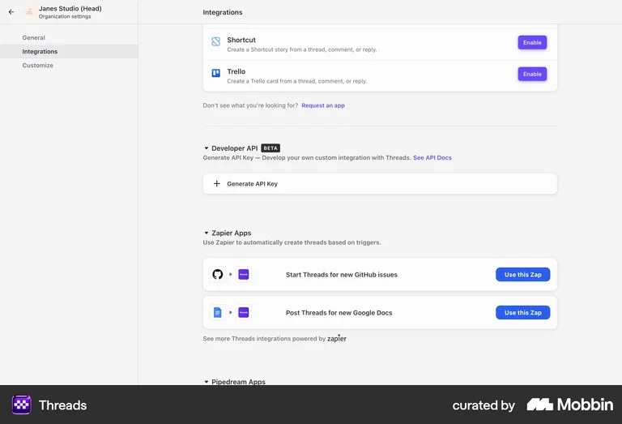
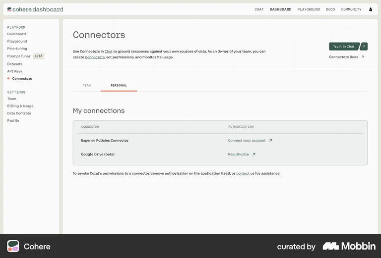
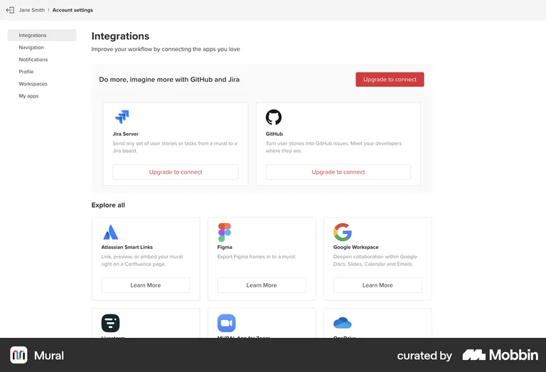